| [ Team LiB ] |
|
16.4 Constraints and Multivariable SystemsThe dynamic matrix control technique presented in the previous section is based on an unconstrained optimization of current and future control moves. The combination of a linear model and a quadratic objective function lead to an analytical solution for the control moves. In practice, constraints on manipulated inputs (control moves) can be very important. If Equation (16.23), which is the analytical solution to Equation (16.22), results in an infeasible control action (e.g., a violation of constraints, such as a flow rate greater than the maximum possible flow), then obviously the control moves must be "truncated" at the maximum or minimum values. Since the resulting truncated solutions may not be optimal if the control horizon is greater than 1, it is important to use a constrained optimization formulation for these problems. Fortunately, dynamic matrix control is easily formulated to explicitly handle constraints by using quadratic programming (QP); the method is known as Quadratic Dynamic Matrix Control (QDMC). Quadratic DMC (QDMC)QDMC considers constraints on the manipulated inputs. The input constraints can be of the following form 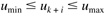 which is suitable for minimum and maximum flowrates, for example. In addition, velocity constraints that limit the magnitude of the control moves at each sample time have the following form 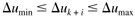 where ordinarily, Dumin = –Dumax. To use a standard quadratic program (QP), the constraints in (16.25) need to be written in terms of the control moves, Duk+i. Since the previously implemented control action (uk–1) is known, we can write 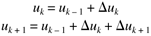 and so on. Since the manipulated input constraints are enforced over the control horizon of M steps, (16.25) and (16.27) yield 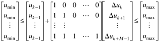 Most standard QP codes use a "one-sided" form 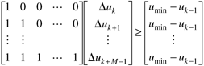 and 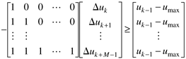 which have the form ADuf b. The velocity constraints are implemented as bounds on the control moves 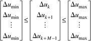 The majority of constrained MPC problems can be solved based on the input constraints considered above. For completeness, however, we also show how constraints on the process outputs can be included. It may be desirable to force the predicted process outputs to be within a range of minimum and maximum values
Here we first rewrite Equation (16.15) in the following form 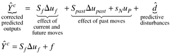 where f, the free response of the "corrected-predicted output" (if no current and future control moves are made) is 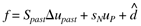 so that (16.31) can be written 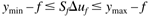 or, in terms of one-sided inequalities 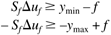 Using shorthand matrix-vector notation, the quadratic programming problem is stated as
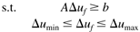 where the matrices and vectors in the objective function are 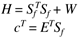 and the inequality matrices, A and b, in (16.37) incorporate the matrices in (16.29) and (16.35), with appropriate dimensionality. For example, if there are no output constraints, then A and b are 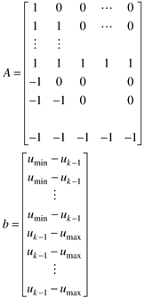 Futher presentation is beyond the scope of this text. Example m-files for the study of constrained systems will be placed on the book web page. Multivariable SystemsIn this chapter we have focused on single input–single output processes. One reason that MPC has been so widely applied is that it naturally handles multivariable systems. The same basic ideas presented in this chapter hold for the multivariable case, but the formulation for step response models in a DMC framework is somewhat tedious. We recommend that you use the Model Predictive Control Toolbox to perform multivariable studies. |
| [ Team LiB ] |
|